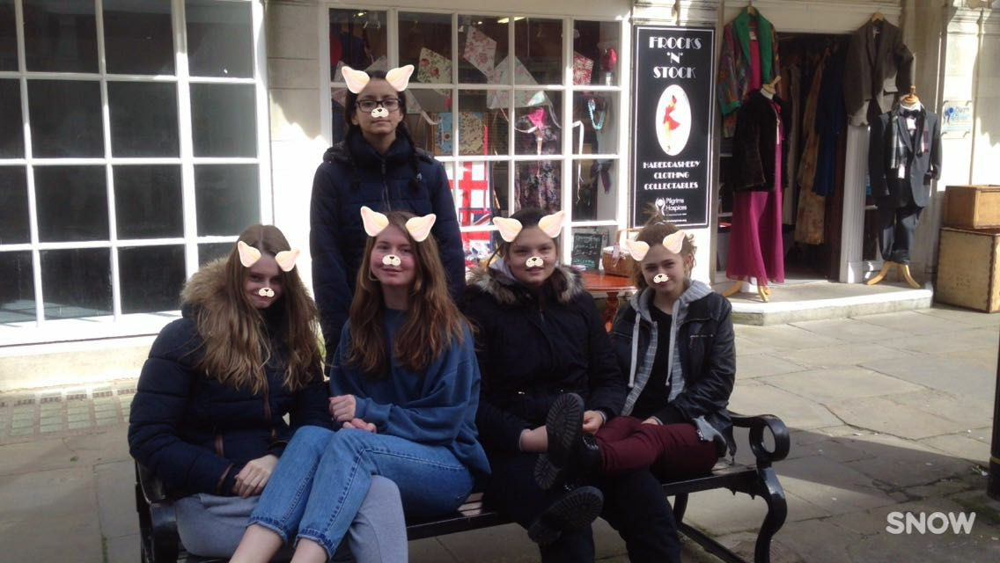

About me
As I wrote on the homepage, my age is 21 years old (born in 2002). My full name is Irem Tezel, got a
2nd name aswell but that's going to remain a secret.
Honestly, I do not have a lot of hobbies. Most of the time I just watch some anime or series,
besides that I game a lot. One of the main games that I can not seem to let go (I am addicted to it.
Help) is League of Legends.
Don't worry! I do touch grass. Not really though but I like snowboarding, I am a beginner but slowly
improving if I ever got some time to practise. That's also the place I work at part-time.
I work at SnowWorld Terneuzen, where you can go skiing or snowboarding. Most of the time you can see
me going down with the sled, Got to love the snow, right?
The kind of music I like could be "weird" for some of you but don't judge and let me be me, thank
you. I listen to metal, rock, hardcore, kpop & R&B. Most of the time I vibe with metal though.
You may call me old or whatever but I love playing board games with friends. Not online, just face 2
face, to see them suffer when I win. So who's in for a 1v1 UNO?
I used to have a dog called Simba. Most of the time I still miss him even though he was very needy
24/7. You can see Simba in the video below.
My Family
As for my family, I have a mother, father and I've got 2 brothers and a sister-in-law. My oldest
brother
is 33 years old, his name is Bulut.
He is disabled sadly but we're not going to let that take us down.
My other brother is 31 years old and his name is Emrah. He is happily married with my sister-in-law,
Josephien, and they have a child together called Ilyas. Ilyas is the cutest by the way.
My brother Emrah and I always try to give my brother Bulut the best time. For e.g. we take him to
the
zoo or to F1 races because he is a huge Max Verstappen fan.
Here is a picture of me and my brother Bulut.

And here is a picture of me and my friends, who are like family to me. This picture was taken in 2017

My traits
Some of my traits are that I can be fun to hang out with. My friends do tell me that I have mother
instincts. Whenever someone is at my place, they are not allowed to leave hungry.
I mean, I don't know how to cook for 1 so the more people the less food is wasted. You leave with a
full stomach and I don't have to throw away my effort, win-win right?
Whenever somebody needs help I'll try to help as much as possible. Depends on what subject but I'll
atleast try.
At the 5th of September, I went indoor skydiving with my colleagues for me it was the first time.
Normally I don't like to try out a lot of new things.
Lately I am trying lots of new things out, just to find out who I really am. Try it aswell and join
me on the adventure path!